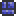

Pink Brick
| Dungeon Brick | |
|---|---|
|  | |
| Statistics | |
| Type | Brick |
| Max stack | 250 |
| Use time | 14 |
On world generation one of a variety of colors of brick is chosen to create the entirety of the dungeon out of. They are a coveted building material, as they're twice as strong as normal bricks and are completely impervious to explosions. A player can get them by mining, but they become relatively harder to mine in lower layers of the dungeon because of the enemies.
As an uncraftable world-generated item, there is a huge (but finite) number of bricks generated per world. Unlike other craftable bricks, it cannot be used to create a wall of the same color. Dungeon Brick Walls do exist, but must be taken from the Dungeon as well. The wall color is randomly chosen separately from the brick color, so they will only match 1/3 of the time.
A Nightmare Pickaxe or better is required to mine it.
Variants
| Name | Item icon | Appearance |
|---|---|---|
| Blue Brick | ||
| Green Brick | | |
| Pink Brick | | |
History
- 1.0.5: The Dungeon Brick tiles had their brightness reduced. The item icons remain the same.
- 1.0.4: A Nightmare Pickaxe or better is now required to mine them, unless they're near the spawn.
- Pre-Release: Introduced.